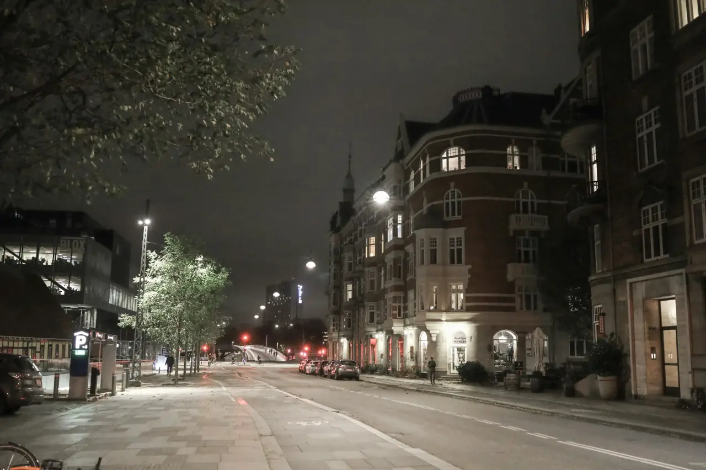

Visit
A green door on Jægersborggade.
Between the ceramics shop and the coffee bar, at the cemetery end of the street.

Address
Jægersborggade 22
2200 København N
Getting here
Five minutes on foot from Nørrebros Runddel, on the M3 metro and the 5C bus. Bike racks right outside.
The seating
Wednesday to Saturday. Doors at 18:45, the first course at 19:00, and you leave around ten.
Access
Step-free from the street, an accessible toilet, and counter stools with backs. Tell us if you need a lower seat.
House rules
- Be on time. Everyone starts together, so a late seat misses courses we cannot cook twice.
- Cancelling. Free until 72 hours before. After that we charge half, because six seats is not many.
- Children. Welcome from twelve, if they are up for three hours at a counter.
- Photos. Take them. No flash, for the people next to you.
Book
Seats open on the first of each month, for the month after.
Book a seat1,450 kr a person · wine pairing 950 kr · juice and tea pairing 550 kr